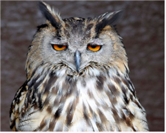

(백엔드 애들이 받아올 사용자 아이디)님 로그아웃

· 이름 : 올빼미(Owl)
· 수명 : 5~18년
· 크기 : 37~46cm
· 먹이 : 쥐, 개구리, 뱀, 도마뱀, 두더지, 곤충
· 서식지 : 아시아, 유럽, 소림지
· 부연 설명 : 대개 갈색 또는 회색이며 거주지는 보통 나무 구멍이다.
나무의 구멍 속을 둥지로 삼아 알과 새끼를 보호한다.
텃세가 매우 강하여 어린 올빼미는 부모가 죽고 나면 자신의 텃세권을 마련하지 못하면 굶주리기도 한다.
낮이 아닌 밤에 활동하는 야행성 맹금류이다.
· 수명 : 5~18년
· 크기 : 37~46cm
· 먹이 : 쥐, 개구리, 뱀, 도마뱀, 두더지, 곤충
· 서식지 : 아시아, 유럽, 소림지
· 부연 설명 : 대개 갈색 또는 회색이며 거주지는 보통 나무 구멍이다.
나무의 구멍 속을 둥지로 삼아 알과 새끼를 보호한다.
텃세가 매우 강하여 어린 올빼미는 부모가 죽고 나면 자신의 텃세권을 마련하지 못하면 굶주리기도 한다.
낮이 아닌 밤에 활동하는 야행성 맹금류이다.